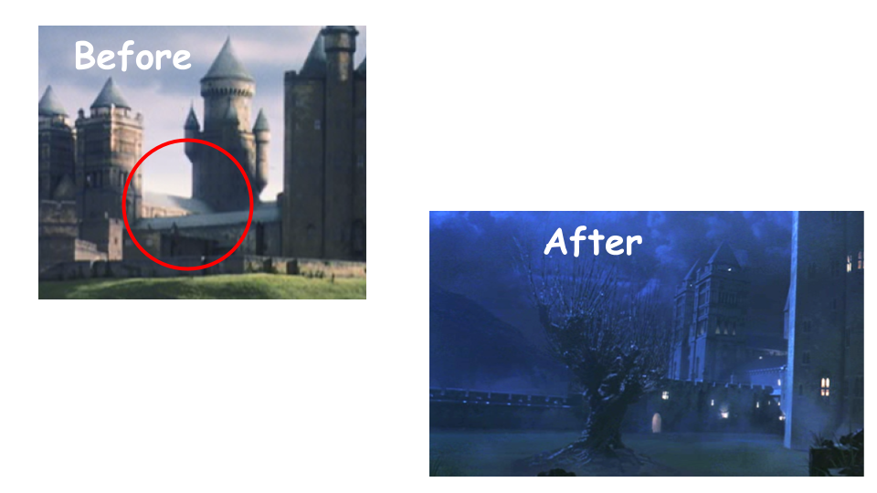
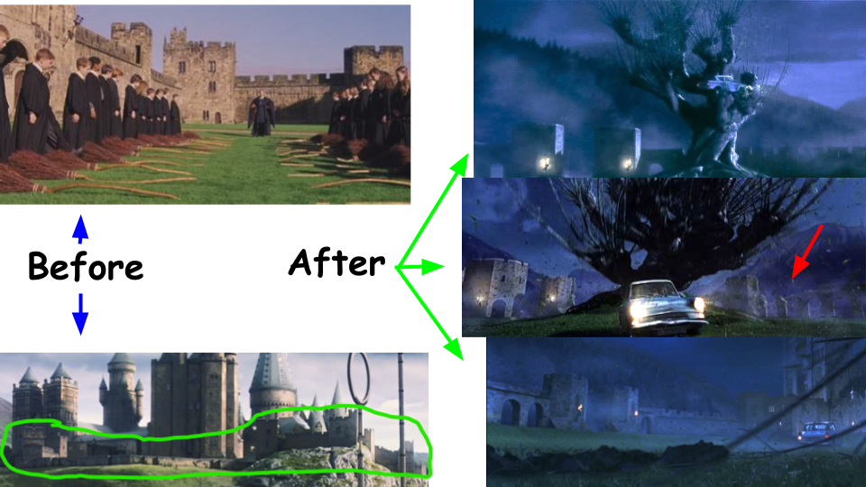
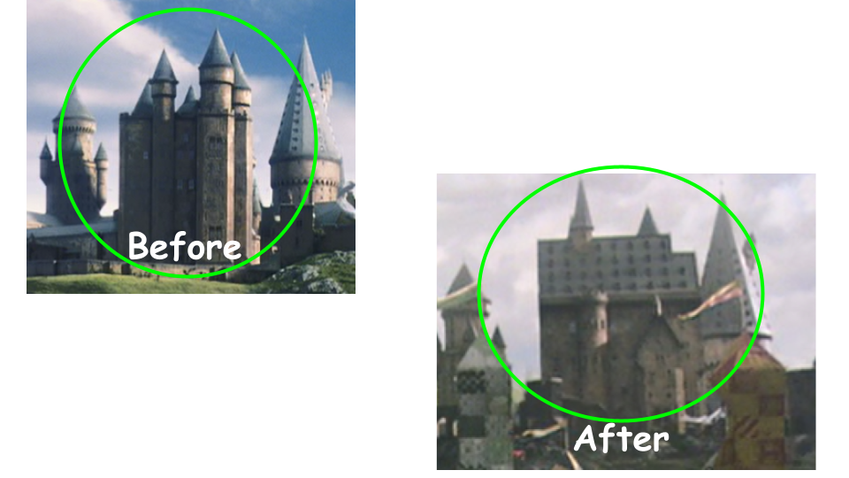
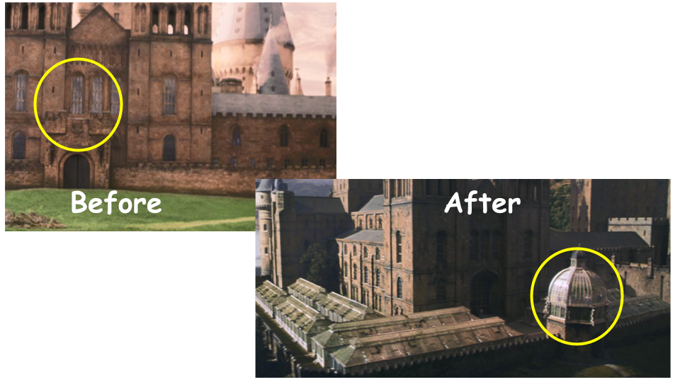
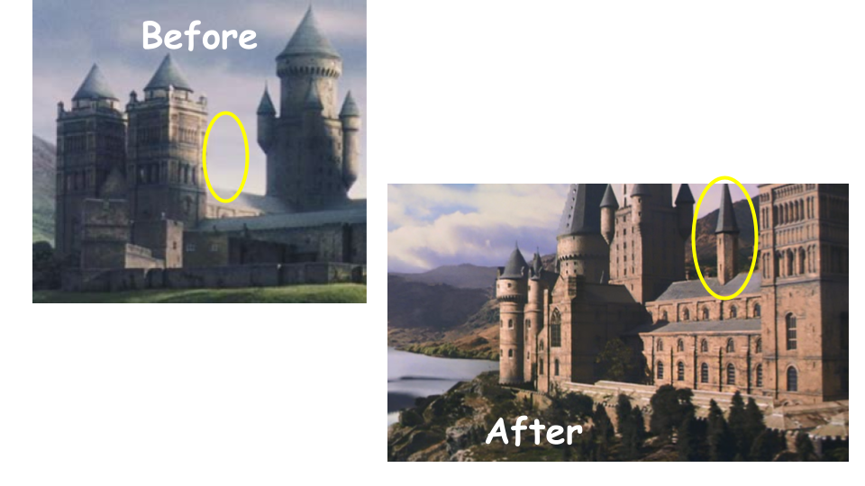
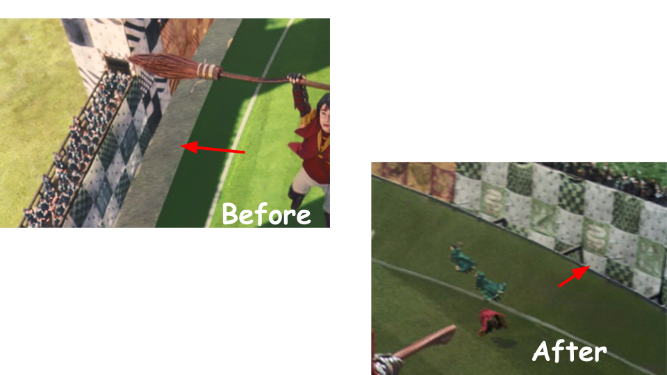
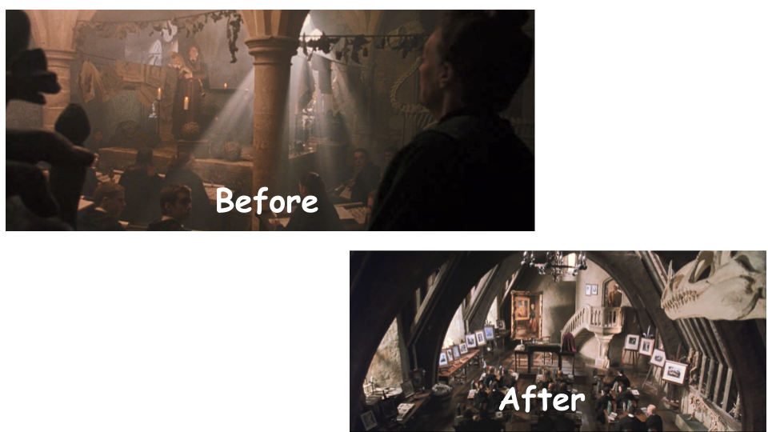
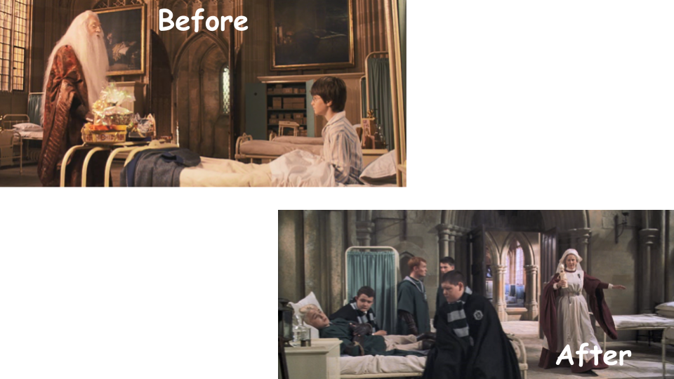

Chamber of Secrets
Harry Potter and the Chamber of Secrets is only the second movie, but many of the series's first changes can be seen here. Several of these changes occurred in or around the Training Grounds Area.
First, we can see a new addition to the training grounds: the Whomping Willow! Because the Whomping Willow doesn't appear in the first book or movie, it needed to added somewhere, and the training grounds were the only place with room.
We can next see the change in the style of the Training Grounds walls. They now have arches and appear to be ruined in some places, as seen next to the red arrow.
There are still more changes to the Training Grouds area! The Training Grounds Tower has been slightly redesigned and given a new roof.
We can also see greenhouses added around the Bell Towers. They were added due to the fact that a Herbology class needed to be added to the movies to introduce the Mandrakes. Note the new dome added to the entrance to the greenhouse area, as well as the new shape of it, circled in yellow.
Another small change is the addition of a small tower on top of the long gallery between the Central Tower and the Bell Towers, likely added for aesthetics.
The last change to Hogwarts's exterior in this movie is the Quidditch Pitch, where wooden beams are added around the field to make a trench, replacing the sand banks formerly on the side. Harry and Malfoy fly through it during the rogue bludger scene.
The Defense Against the Dark Arts classroom was also completely redesigned. It was seen briefly in Philosopher's Stone, but this movie marks the first time a full lesson has been seen, likely prompting the redesign. In Philosopher's Stone, the DADA classroom appears to be directly connected to the hallways by the middle courtyard. However, even though the new entrance to the classroom wasn't seen until Goblet of Fire, it is safe to assume that this movie is where the classroom was placed in the DADA tower.
Finally, we can see that the Hospital Wing gets a redesign too. The two paintings on either side of the door were removed, and the style of the door was changed.
